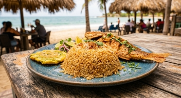

¿Cual es el origen del arroz con coco?
Los platos de coco son típicos de la costa caribeña colombiana. Arroz con coco significa “arroz de coco”. Se cree que tiene su origen en Cartagena de Indias, una gran ciudad portuaria de la costa norte del Caribe. El plato también se conoce como arroz con coco frito.
Los colombianos sirven el arroz con coco con patacones (plátanos fritos colombianos) como acompañamiento de los mariscos fritos. La variedad más dulce suele ser un postre.
Ingredientes
- 900 ml de leche de coco
- 225 g de arroz de grano largo
- 50 g de azúcar moreno
- 20 g de mantequilla
- 1 cucharadita de sal
- 250 ml de agua
- 250 ml de agua de coco
- 3 cucharadas de pasas sultanas
Instrucciones
- En una olla de fondo grueso, vierta la leche de coco y llévela a ebullición a fuego medio.
- Cocer la leche de coco a fuego medio-bajo durante 25-30 minutos, removiendo constantemente. El líquido debería empezar a evaporarse. La consistencia se volverá pastosa y luego se convertirá rápidamente en pequeñas bolas del tamaño de un guisante.
- Cocer a fuego lento durante otros 20-25 minutos, removiendo con frecuencia.
- Reducir el fuego a bajo. El líquido debe comenzar a evaporarse por completo y los sólidos de leche restantes comienzan a dorarse. Seguir removiendo.
- Una vez que los sólidos de la leche de coco resultante tengan un color dorado uniforme, añadir el arroz. Remover hasta que los sólidos de coco se mezclen completamente con los granos de arroz.
- Añadir el azúcar moreno, la mantequilla y la sal. Remover para combinar.
- Retirar del fuego y verter el agua y el agua de coco. Remover y llevar a ebullición a fuego medio.
- Reducir a bajo y cocinar a fuego lento durante unos 2 minutos.
- Tapar y cocinar a fuego lento durante 20 minutos.
- Retirar del fuego y dejar reposar, tapado, otros 20 minutos.
- Retirar la tapa y remover ligeramente el arroz.
- Añadir las pasas y volver a remover.
- Servir caliente.